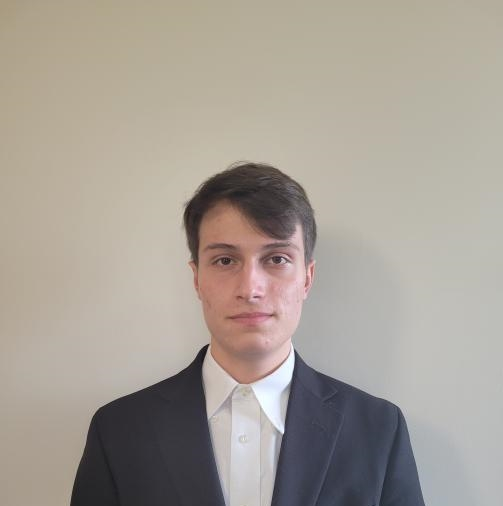
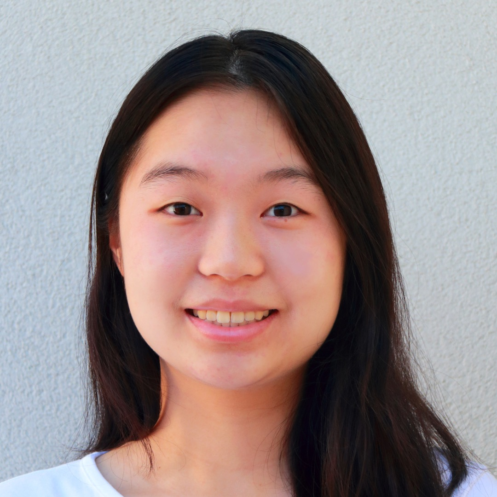
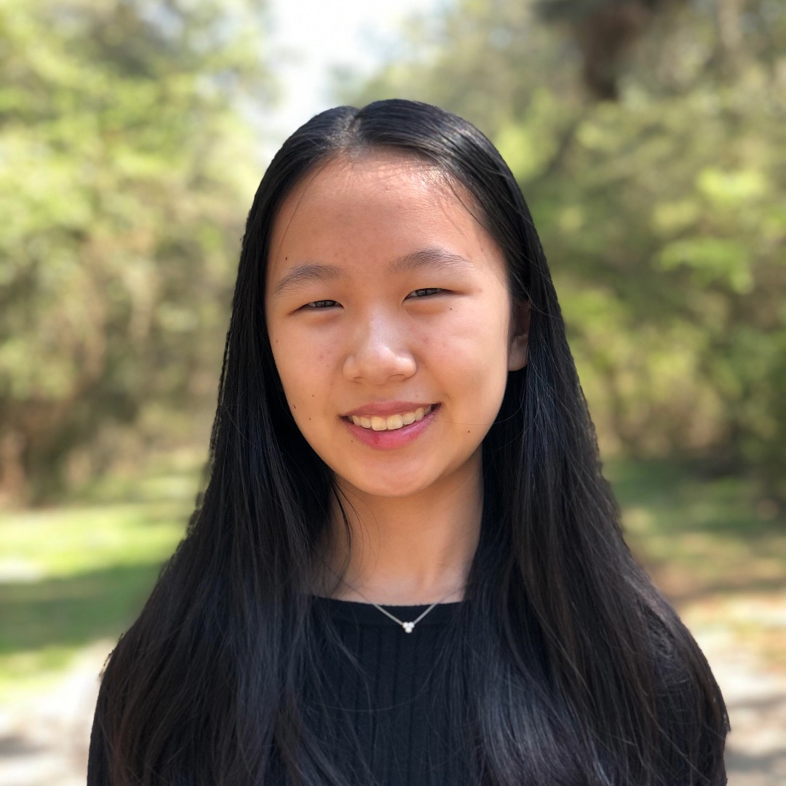
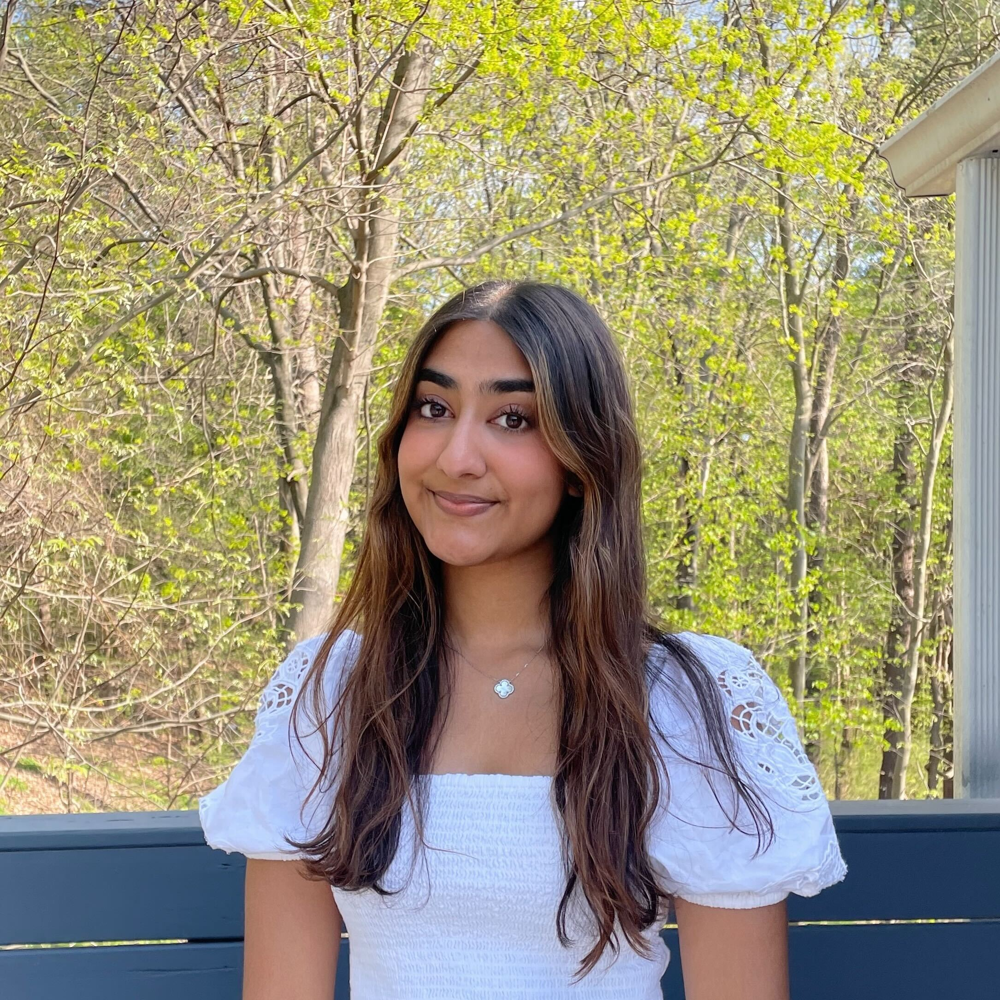
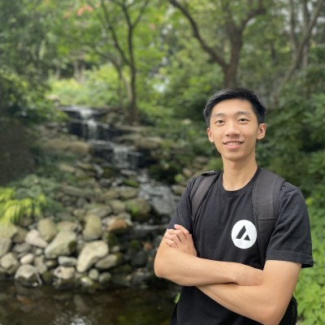
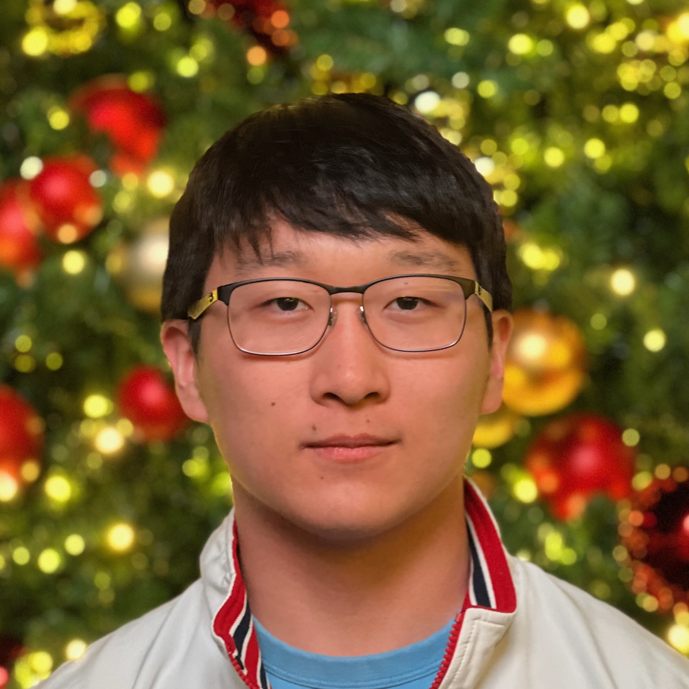
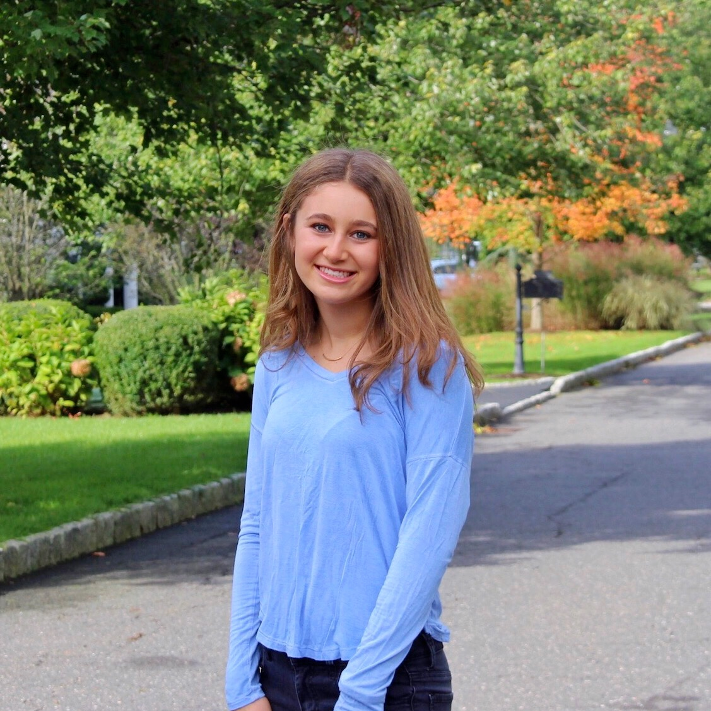

Our Team
Members

Daniel Mistrik
Daniel is a rising junior studying Computer Science and Mathematics. In
addition to the Cornell Quant Fund, Daniel is a member of the Cornell Blockchain where he is the Head of
Education responsible for teaching the 'Intro to Blockchain' course. This summer Daniel worked as a
Software Engineer for Dexterity Capital, a high-frequency prop shop. Daniel can be reached at
dm743@cornell.edu.
Sean Wiesner
Sean is a Junior majoring in Computer Science and minoring in Mathematics.
Sean is also a TA for CS 4700 and a bassist for the Cornell Jazz Ensemble. Outside of school, he enjoys
playing the guitar, bass, or piano, and can be seen at the Noyes gym. You can contact Sean at
saw336@cornell.edu.

Katherine Heatzig
Katherine is a member of the Class of 2024 from Boca Raton, Florida currently
majoring in Computer Science in the school of Arts and Sciences. Katherine is also a part of Cornell
Financial Analysts and Alpha Fund on campus. In her free time, Katherine enjoys spearfishing, skiing,
and hiking. Katherine will be joining Morgan Stanley as a Quantitative Finance Summer Analyst. She can
be reached at klh268@cornell.edu.

Jacqueline Wen

Lisa Li
Ethan Yu
Ethan is a junior studying computer science and minoring in Business. He is
an Ithacan native, and in the outdoors he stays active by going on hikes and playing tennis. He also
enjoys working out, playing piano, producing music, watching movies, and cooking. Over the summer he
joined Akamai Technologies as a Software Developer Intern. He can be reached at ejy32@cornell.edu.
Preston Hanzley
Preston is a sophomore from Tennessee studying Mathematics and Computer
Science with a minor in Business. On campus, Preston is also a member of the Cornell Financial Risk Club
and the Poker Association of Cornell. He enjoys running, playing chess, and trading stocks. Preston can
be reached at pth34@cornell.edu

Tanya Maini

Alex Ni

Andres Wu
Aryaan Jena
Emily Wang

Bryant Park
Chad Yu
Elizabeth Tang
Prateek Gautam
